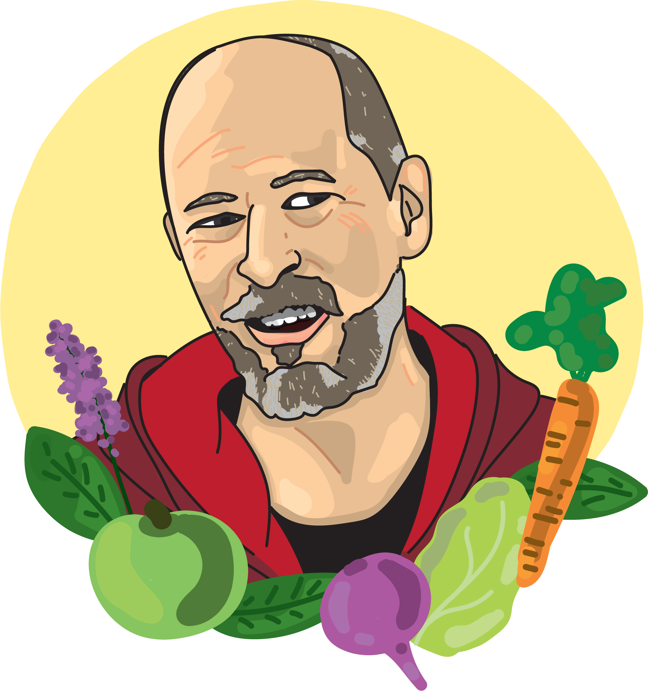
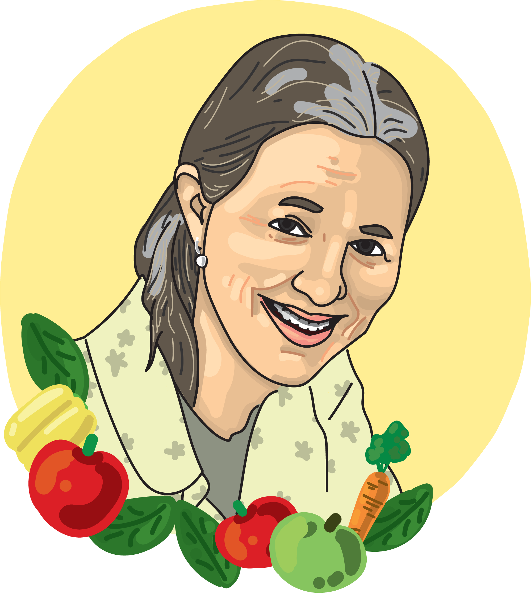
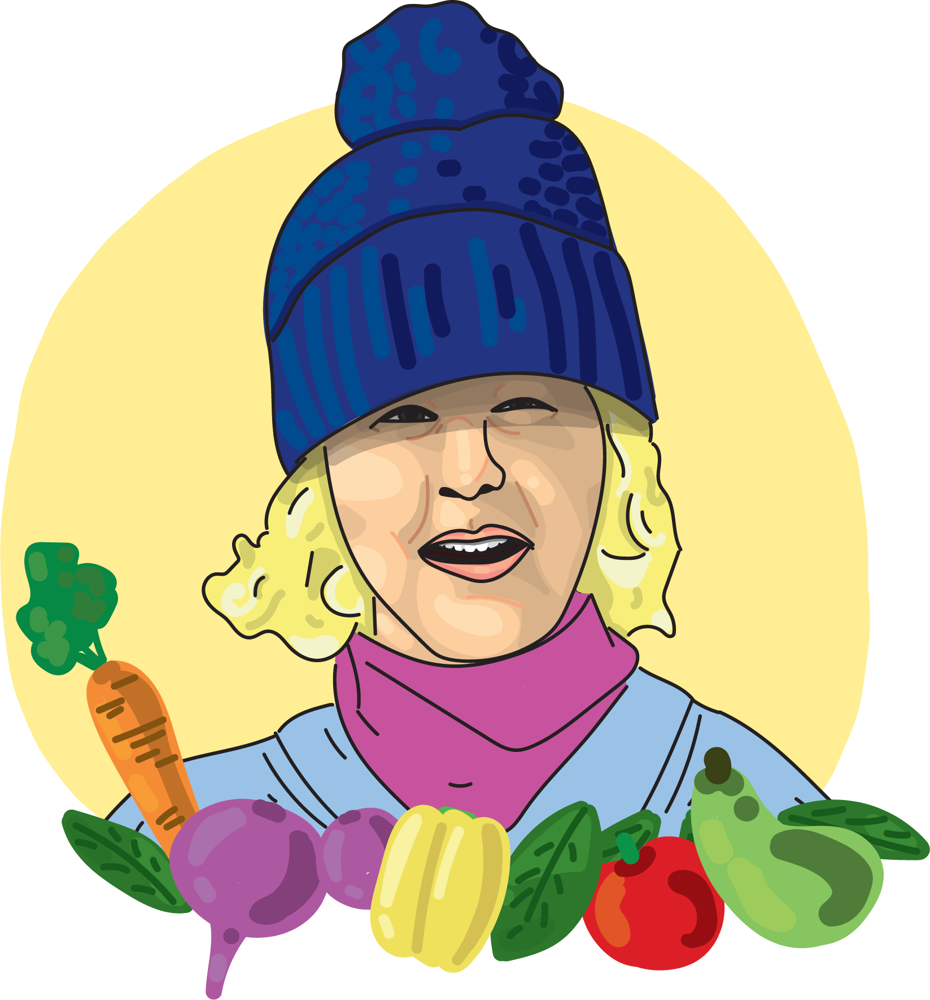

Onze mensen
Michel Olden
Vanaf kleins af aan was Michel bezig met tuinieren in opa's moestuin. Na vele jaren is dit uitgebreid naar een eigen grote achtertuin en een glastuinbedrijf.
Afgestudeerd in Biodynamische landbouw, met veel kennis over het telen van groenten en kruiden.
Aliet Rogaar
Tijdens haar jeugd werd Aliet al omringt door wild en verse groenten. In Amsterdam was ze een catering begonnen met verse groenten uit het seizoen. Ook startte ze een 2002 een Shiatsu praktijk.
Afgestudeerd in Stadslandbouw, gespecialiseerd in fruitteelt en voedselbosranden.
Nancy Wiltink
Sinds 1955 is Nancy een cultureel ondernemer, actief op allerlei terreinen in Amsterdam Noord. Ook heeft ze een eigen tuin waar ze fruit in verbouwd.
Afgestudeerd aan de part time opleiding Stadlandbouw, met veel kennis in bomen kweken, groente- en fruitteelt.